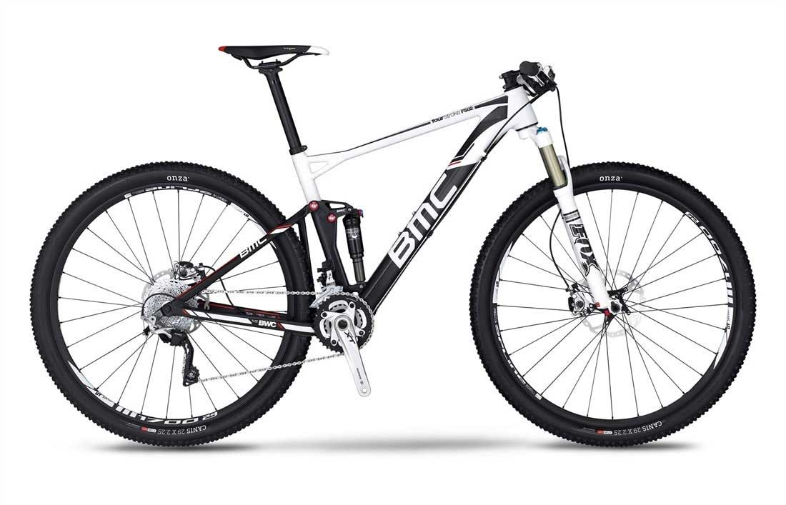

Bikes for Sale
BMC Fourstroke FS02 XT 2015
BMC Fourstroke FS02 XT 2015
Smart is snazzy. The BMC Fourstroke FS02 29 XT is flashy for those who believe that thoughtful selections matter more than brute cash. The geometry is the same as the FS01, as is the suspension system. The two bikes even share a main triangle fabricated from carbon-fiber, though the suspension elements are welded, triple-butted aluminum rather than molded carbon-fiber. This means you get a hefty price break on the frame for no change in performance and a little extra weight. A little more durable, too. And you still get all the great features designed into the FS01. That includes a BB90 bottom bracket, for greater frame strength and less weight, an integrated, adjustable chain catcher to protect the bottom bracket, an integrated chain guide under the right chain stay to keep the chain on no matter what.
$5,000
Now $2,300
Share


2017 Bmc Speedfox 03 Trailcrew Slx
The Speedfox Trailcrew highlights the playful side of BMC and the mountain bike culture within. With 150mm of plush travel from BMC's legacy APS suspension system, paired with wider bars, wider rims, and wider tires, things are bound to get rowdy. Its super short chainstays, long toptube and a downright awesome, long front-center…this bike was made to put a smile on your face.
Al-13 Premium Triple-butted aluminum
Rockshox Pike RC, Solo Air
RaceFace Aeffect / New Shimano SLX
New Shimano SLX
New Shimano SLX / Alex
$4,300
Now $2,895
Share
Felt Decree FRD 2017

As with all Felt FRD bikes, the Decree FRD is the pinnacle of our trail racing bikes. Felt engineers developed the best carbon layup possible for trail riding using UHC Ultimate + TeXtreme, delivering a light, stiff and incredibly durable frame. Felt’s FAST suspension technology with a 140mm rear shock provides incredibly efficient suspension, made even better by the Rock Shox Pike RCT3 fork. Seamless and fast SRAM XX1 drivetrain works flawlessly with the DT Swiss XMC1200 wheelset. For the paramount trail bike, there’s only one option: Decree FRD.
$9,999
Now $4,999
Share
Jamis DragonSlayer 27.5+ Pro 2017
We wrote the book on off-road steel. Over 30 years of it. These Dragons might look like retro rigs, but there’s nothing outdated or outmoded about the way these bikes ride with 120mm travel forks from Fox and Rock Shox. The Dragon frame gives as much as it gets: the harder you push it, the better it feels.FAST suspension technology with a 140mm rear shock provides incredibly efficient suspension, made even better by the Rock Shox Pike RCT3 fork. Seamless and fast SRAM XX1 drivetrain works flawlessly with the DT Swiss XMC1200 wheelset.
$2,499
Now $1,999
Share